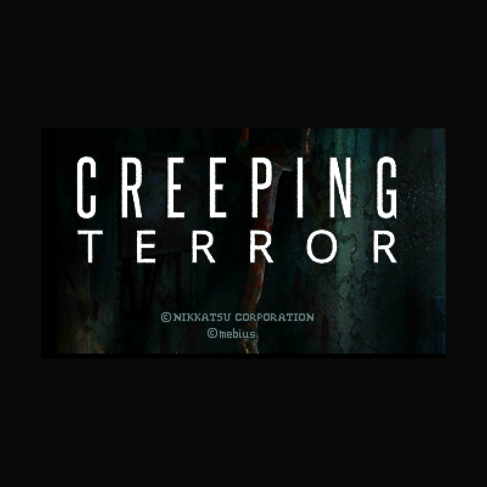

NINTENDO 3DS · EUROPE / AUSTRALIA
แพตช์ภาษาไทย build 015 · แปลโดยเพจแปลเกมเก่า
กลุ่มเพื่อนเดินทางมาสำรวจคฤหาสน์ลึกลับกลางป่า แต่ข่าวลือเกี่ยวกับสถานที่แห่งนี้อาจเป็นจริง ยิ่งเข้าไปลึกเท่าไร เส้นทางกลับออกมาก็ยิ่งเต็มไปด้วยอันตราย สำรวจ เก็บเบาะแส และหาทางเอาชีวิตรอดไปด้วยกัน
ใช้ Creeping Terror (Europe, Australia) (eShop) ฉบับถอดรหัส ขนาด 307,089,408 ไบต์ ระบบตรวจ SHA-256 ก่อนเริ่ม ไฟล์เกมทำงานในเบราว์เซอร์และไม่ถูกอัปโหลด
ดาวน์โหลดเกมที่แพตช์แล้วหากใช้รอมที่แพตช์แล้วใน Azahar ให้ปิดม็อดเดิมของเกมก่อน · ข้อมูลรุ่นและแฮช
ชุด Luma ยังไม่ได้ทดสอบบนเครื่องจริง
build 014 ผ่านการทดลองฉากเปิดใน Azahar และแสดง ำ กับ ฤ ได้ ส่วน build 015 เพิ่มเครดิตใต้ชื่อเกม ตรวจไฟล์และประกอบแพตช์กลับตรงแฮชแล้ว ยังต้องทดสอบเครดิตในเกมจริง รวมถึงฉากอื่นและเครื่อง 3DS